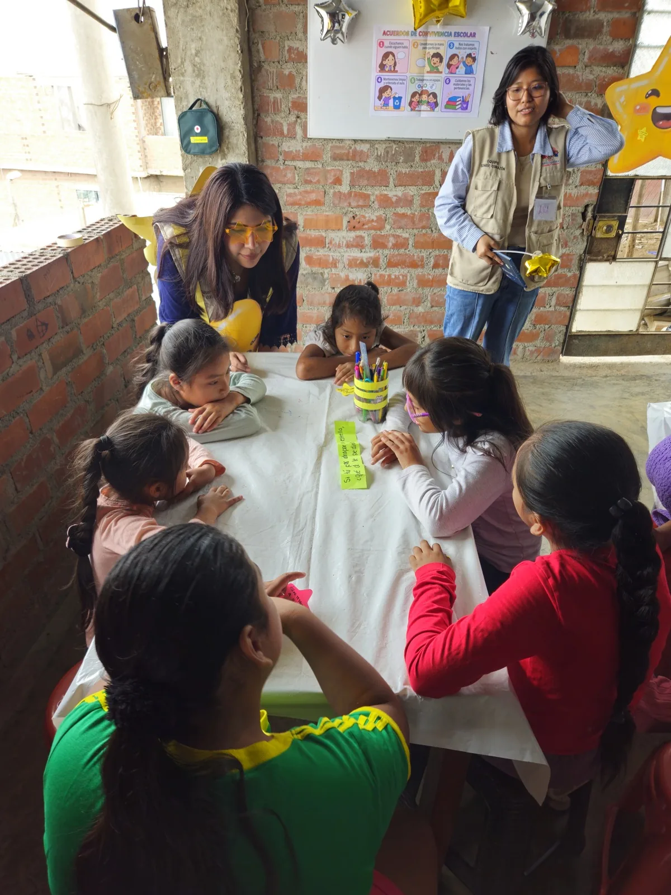
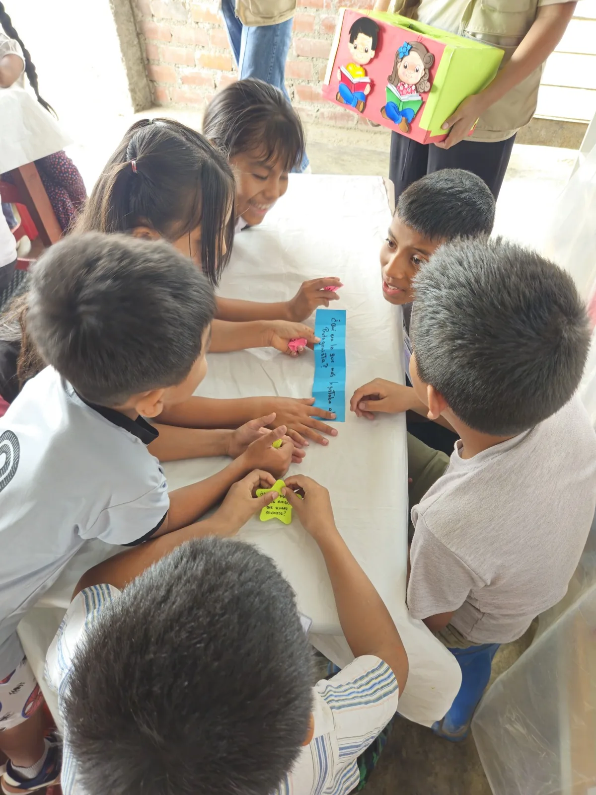

Descubrir
Acercarse a nuevas historias, autores y maneras de ver el mundo.
Bibliosonrisas
Nuestra biblioteca comunitaria en Collique, Comas, acerca la lectura a niños y familias y acompaña los encuentros de Soñando Libros.

Nuestra primera biblioteca comunitaria
Bibliosonrisas nació en la Olla Común Mujeres Triunfadoras, en la primera zona de Collique.
La biblioteca forma parte del trabajo educativo de Sonríe Corazón y se creó con el apoyo del premio «Lanza tu Estrella» de Interbank, obtenido en 2025.
Durante los talleres, los estudiantes pueden explorar lecturas, elegir libros y registrar sus descubrimientos en su pasaporte lector.
Conoce Soñando LibrosMás que una colección de libros
Acercarse a nuevas historias, autores y maneras de ver el mundo.
Desarrollar autonomía y gusto por la lectura.
Conversar sobre los libros y escuchar otras interpretaciones.
Aprender a organizar, prestar y devolver los materiales con responsabilidad.

Acércate a la biblioteca
Para consultar actividades, acceso o donación de libros, escríbenos. El equipo coordinará contigo la disponibilidad y la recepción de materiales.
Consultar actividadesJuntando corazones para crear alegría
Coordinemos una donación de libros en buen estado y adecuados para los lectores de la biblioteca.